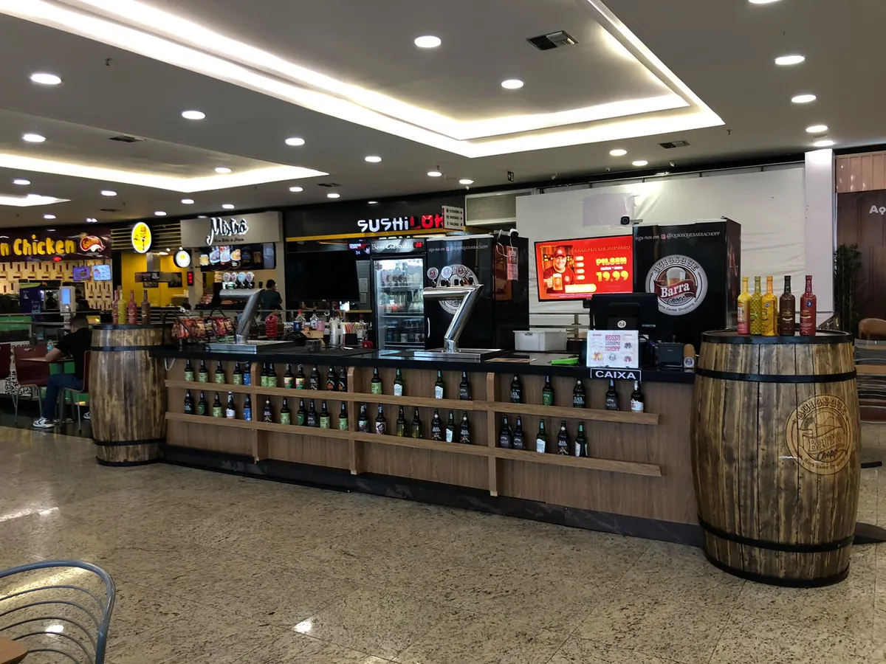
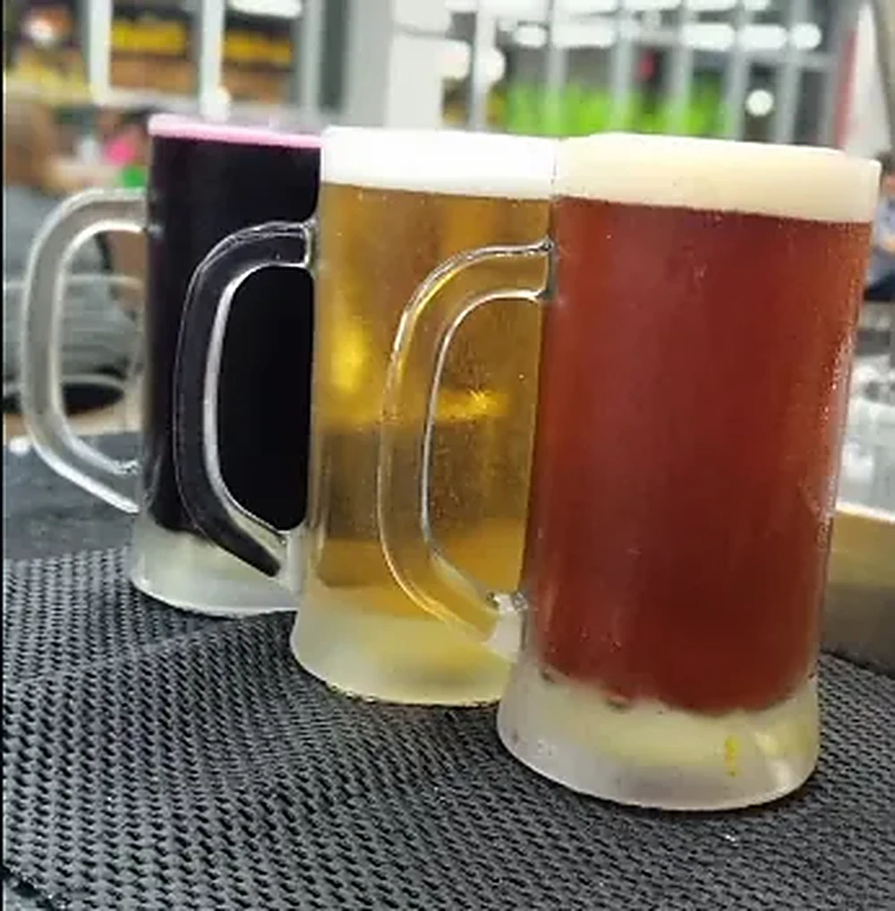
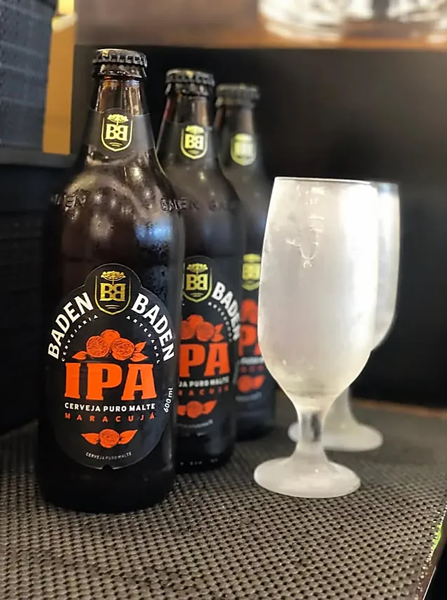
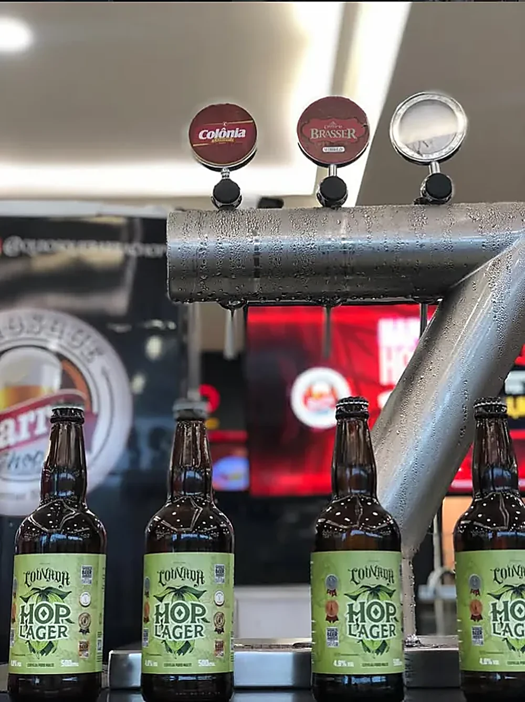
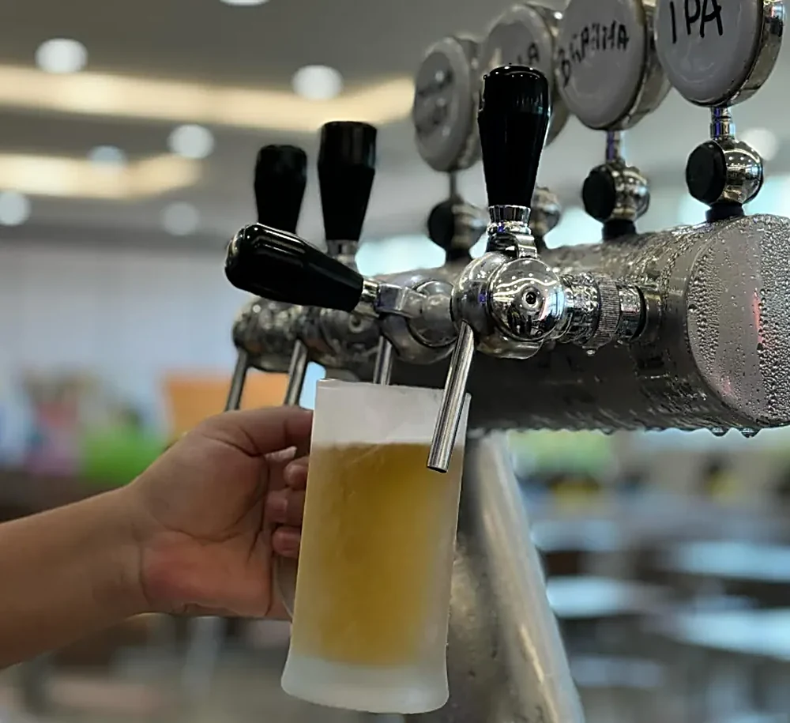
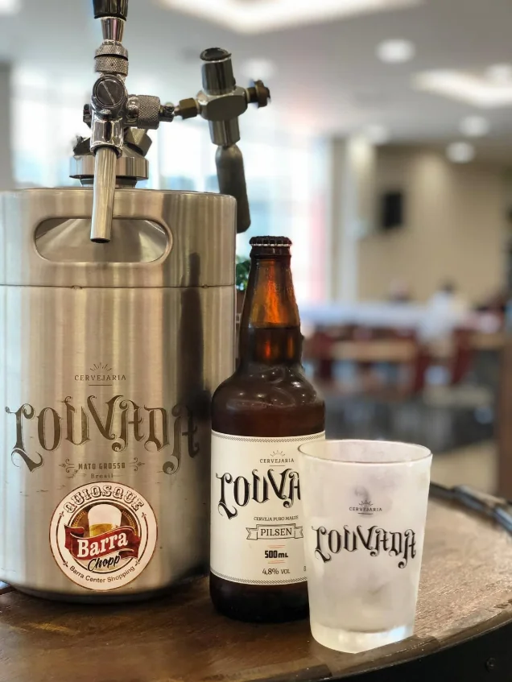
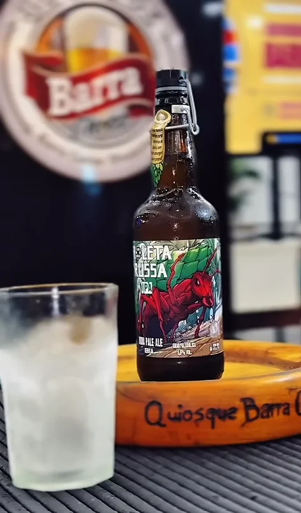

O Quiosque Barra Chopp fica no Barra Center Shopping, em Barra do Garças — MT. Abre todos os dias, de domingo a domingo, com um atendimento que é a nossa marca registrada.

Chopp gelado em caneca gelada, do jeito que tem que ser. Pilsen, lager, IPA e chopp de vinho — sempre na temperatura certa e na espuma no ponto.

Além do chopp, as melhores cervejas do mercado: Pilsen, Hops, IPA, Porter, Trigo, Stout e muito mais.

Trabalhamos com as marcas que você confia — Brahma e Heineken. E, de vez em quando, rola promoção e happy hour.

Tem também bebida sem álcool, água e refrigerante pra acompanhar. Mas, se você veio pelo chopp, veio ao lugar certo.

A Louvada, a cerveja artesanal que a cidade abraçou, também tem lugar garantido no quiosque — sempre gelada.

E tem a roleta russa pra animar a roda — a brincadeira de copos que todo mundo pede.